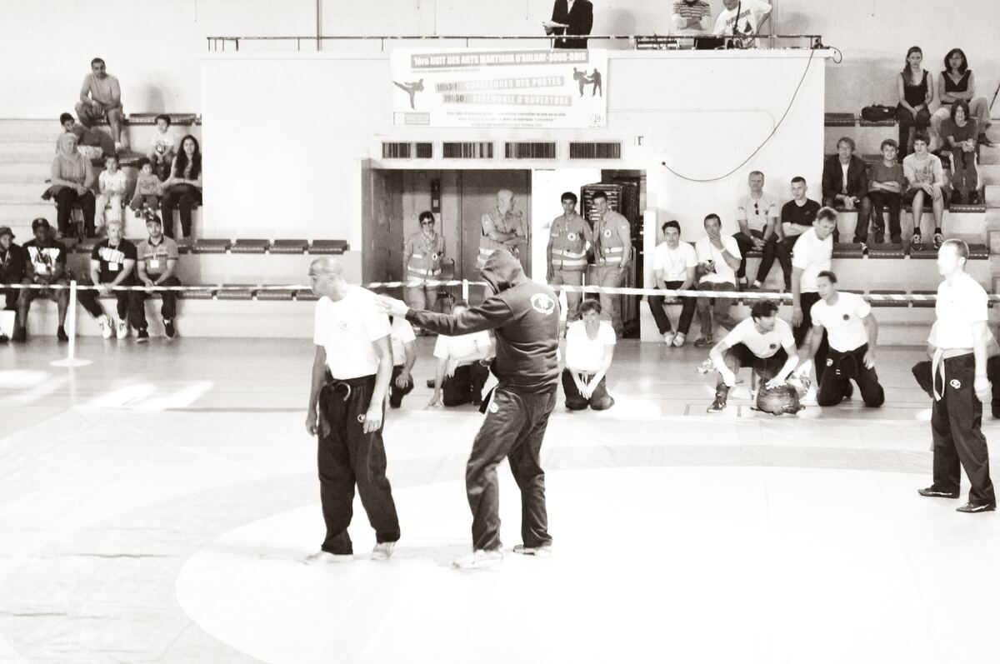

Self-defense · Israel
Krav Maga
Israeli self-defense: aggression, weapons, and exits — built to end the problem and leave.

Find a topic
A map of this art. Live entries are links. The rest is mapped, not written yet.
What Is Krav Maga?
Krav Maga (“contact combat”) is a self-defense system associated with Imi Lichtenfeld and with Israeli military and police training, later exported as a civilian product. The goal is not a trophy. It is to survive an assault, including against weapons, and leave.
There is no single international sport ruleset. Organizations disagree on ranks and drills. Treat “krav” as a family of curricula with a shared mood: simple, aggressive, scenario-heavy.
How Krav Maga Works
A typical hour: straight strikes, elbows, knees, groin and eye attacks in the self-defense context, gun and knife defenses, and multiple-attacker drills. Ground work is often “get up,” not a sport guard game — though some schools now cross-train BJJ.
The honest encyclopedia note: a drill that always works on a cooperative partner may fail under pressure. Martial Index will not invent a fake krav term catalog to paper over that.
Military root, civilian industry
Military krav and civilian krav are related and not identical. Boxing, wrestling, and judo appear in the source mix. Read those hubs when you want sports that pressure-test pieces of the same toolkit.
What You’ll Find Here
This hub is the live overview. Published entries are links. Fighters, gyms, rules, and news are mapped for later — even when those pages are not written yet.
- Related hubs. Boxing, Wrestling, MMA, BJJ.
- Fighters / gyms / rules / news. Mapped, not written yet — and gym quality is the whole story.
FAQ
Questions we hear on the mats, in gyms, and when fighters compare styles.
Is krav a martial art or self-defense?
It is a self-defense system that uses martial tools. It is not trying to be a points sport.
Will krav replace BJJ or boxing?
No. Those sports pressure-test specific ranges. Good krav rooms often send people to them.
Why do some martial artists mock it?
Because some commercial schools sell confidence without resistant training. That is a gym problem, not a reason to erase the military syllabus.
The Bottom Line
Krav Maga is a self-defense method: hit, deal with the weapon, leave. For live sport vocabulary, keep reading boxing, wrestling, and BJJ.